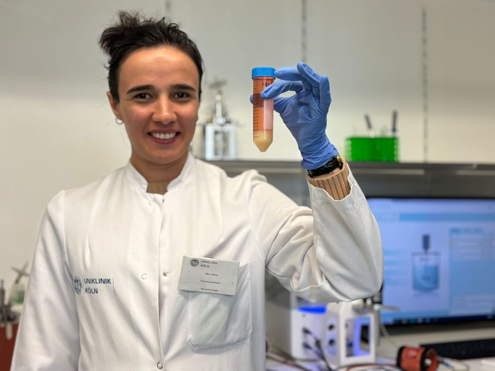
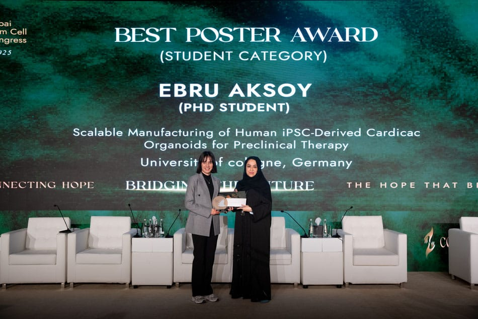
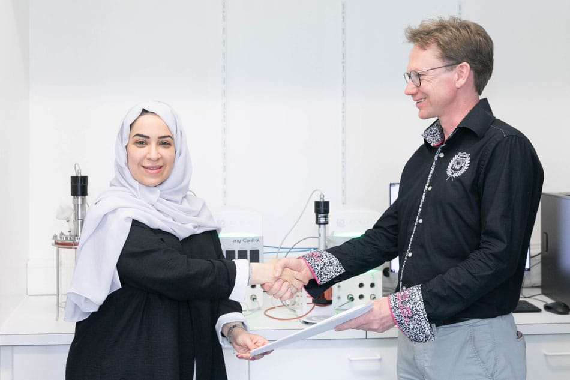

bioengineering
an Open Access Journal by MDPI
Cell-Based Therapies: Ferromagnetic Versus Superparamagnetic Cell Targeting
Bioengineering 2025, Volume 12, Issue 6, 657
Read the full article
Publications, funding, awards, conferences, collaborations, and research milestones. A rolling log of what the lab is up to, in reverse chronological order.
Bioengineering 2025, Volume 12, Issue 6, 657
Read the full article
For the first time, Dr. Sarkawt Hamad and Ebru Aksoy have succeeded in scaling up cardiac organoid differentiation for cell replacement therapy.
This milestone unlocks the production of therapeutically relevant quantities of cardiac organoids for preclinical transplantation trials — a key step on the translational path from bench to clinic.
The working group led by Prof. Dr. Kurt Pfannkuche at the Marga and Walter Boll Laboratory for Cardiac Tissue Engineering is researching the use of cardiac organoids derived from human induced pluripotent stem cells for the treatment of cardiac infarction.
To produce therapeutically relevant quantities of organoids for preclinical transplantation trials, bioreactor processes are being optimised and scaled up from a small 200 mL laboratory system to larger reactors with a volume of 2–3 litres.
In a joint project with Biothrust GmbH (Aachen), an innovative gas transfer system is being tested that allows the reactors to be operated with higher cell densities. The Biothrust system is based on hollow fibres through which oxygen flows and is released into the cell culture medium without forming bubbles, while excess carbon dioxide is removed.
The state of North Rhine-Westphalia is funding the Bionic Reactors for Cardiac Organoids (BiRonCa) project for two years with around €850,000.

Congratulations to Ebru Aksoy for winning the Best Poster Award (Student Category) at the 3rd Dubai Stem Cell Congress.
Her poster presented scalable manufacturing of human iPSC-derived cardiac organoids for preclinical therapy.
“Engineered In Vitro Multi-Cell Type Ventricle Model Generates Long-Term Pulsatile Flow and Modulates Cardiac Output in Response to Cardioactive Drugs.”
Authors: Christoph Kuckelkorn, Ebru Aksoy, Natalija Stojanovic, Laila Oulahyane, Mira Ritter, Kurt Pfannkuche, Horst Fischer.
Published in: Advanced Healthcare Materials, 2025 Feb 13: e2403897. doi: 10.1002/adhm.202403897
The Marga and Walter Boll Laboratory for Cardiac Tissue Engineering was officially opened on Thursday, 22 June 2023, in the large lecture hall of the physiology department of the Medical Faculty, University of Cologne.
Invited scientists presented current projects alongside talks from international experts:

On the occasion of the official opening of the Marga and Walter Boll Laboratory, we were honoured to welcome Dr. Fatma Alhashimi, director of the Hortman Stem Cell Laboratories in Dubai, as our guest.
Hortman Laboratories operates the first GMP laboratory for stem cells in the United Arab Emirates. We are looking forward to the cooperation.
North Rhine-Westphalia has announced the positively evaluated projects in the Zukunftsmedizin call.
We are happy to find our PERIDIAN project on the list of successful applications. Together with our partners innoVitro GmbH and the Fraunhofer Institute for Laser Technology, we look forward to an exciting project.
“High-efficient serum-free differentiation of endothelial cells from human iPS cells.”
Authors: Sarkawt Hamad, Daniel Derichsweiler, John Antonydas Gaspar, Konrad Brockmeier, Jürgen Hescheler, Agapios Sachinidis, Kurt Paul Pfannkuche.
Published in: Stem Cell Research & Therapy, 2022 Jun 11; 13(1):251.
Introduction. Endothelial cells (ECs) form the inner lining of all blood vessels and play important roles in vascular tone regulation, hormone secretion, anticoagulation, and immune cell extravasation. Limitless EC sources are required for in vitro studies and tissue engineering.
Method. Human iPSCs are cultured under serum-free conditions and induced into mesodermal progenitor cells via Wnt signalling for 24 h, then further differentiated into ECs using a combination of VEGF, bFGF, 8-Bromoadenosine 3′,5′-cyclic monophosphate (8Bro), and melatonin for 48 h.
Result. The protocol generates hiPSC-derived ECs at 90.9 ± 1.5% efficiency in only six days, without animal-derived serum, and transfers cleanly from 2D monolayers into 3D scalable bioreactor suspension cultures.
“Engineering of cardiac microtissues by microfluidic cell encapsulation in thermoshrinking non-crosslinked PNIPAAm gels.”
Authors: Philipp Jahn, Rebecca Katharina Karger, Shahab Soso Khalaf, Sarkawt Hamad, Gabriel Peinkofer, Raja Ghazanfar Ali Sahito, Stephanie Pieroth, Frank Nitsche, Junqi Lu, Daniel Derichsweiler, Konrad Brockmeier, Jürgen Hescheler, Annette Schmidt, Kurt Paul Pfannkuche.
Published in: Biofabrication, accepted manuscript.
Cardiomyocytes and MSCs are encapsulated in PNIPAAm droplets above the lower critical solute temperature (32 °C), trapping cells in a collapsing polymer network and increasing local cell density by an order of magnitude. Stable, rhythmically contracting microtissues form within 24 h and are released by washout below the LCST.